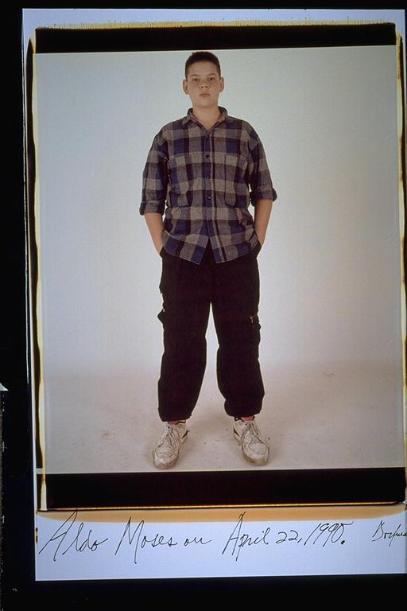

Pals: Boys Who Grew Up Together
elsadorfman.com/pals
Aldo: At this age I remembered that I began getting my own haircuts. It was the beginning of the time when fashion became important. Before this fashion was never a thing. My hair became a very important thing. Just in terms, it was a way to express myself. Looking back I can see that most of them were pretty bad though.

elsad@comcast.net